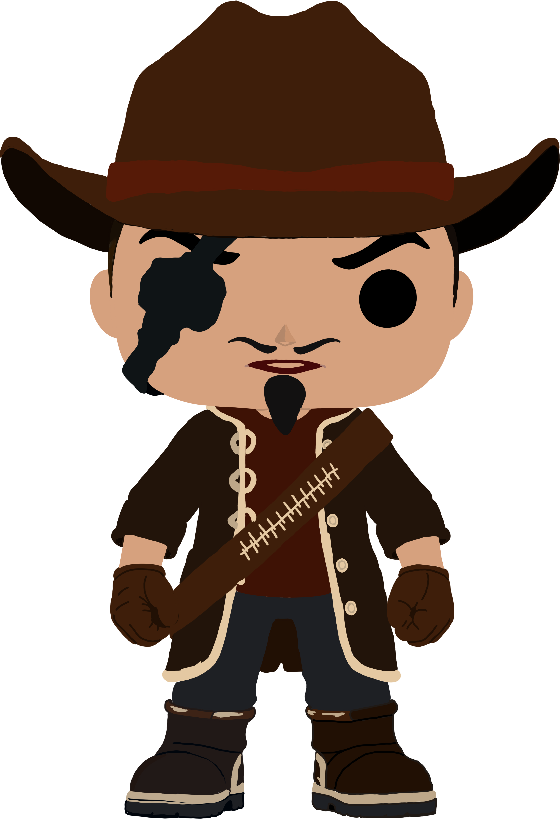

Reisender · Lichtschütze
Luzz Biteyear
Luzz stammt aus Redstone, hat seine Heimat jedoch vor Jahren verlassen. Seitdem zieht er als Reisender durch das Land. Als er hört, Redstone sei zu einer Geisterstadt geworden, macht er sich auf den Rückweg.
Er will die verschwundenen Bewohner finden, den Fluch brechen und einen Menschen retten, zu dem der Kontakt lange abgebrochen war. In der Schattenwelt wird sein Revolver zur Lichtwaffe – doch nicht jedes Rätsel lässt sich mit einem Schuss lösen.
- Herkunft
- Redstone
- Rolle
- Reisender und Spielfigur
- Ziel
- Den Fluch brechen und die Bewohner zurückholen
- Fähigkeit
- Lichtschüsse und der Wechsel zwischen den Welten